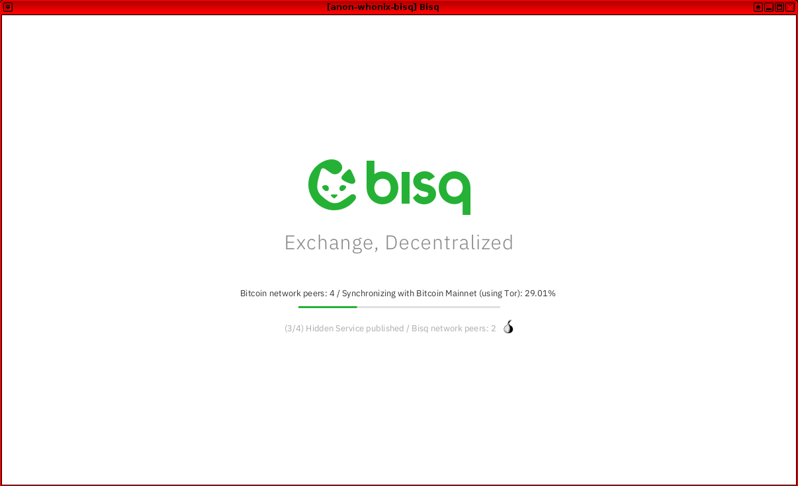
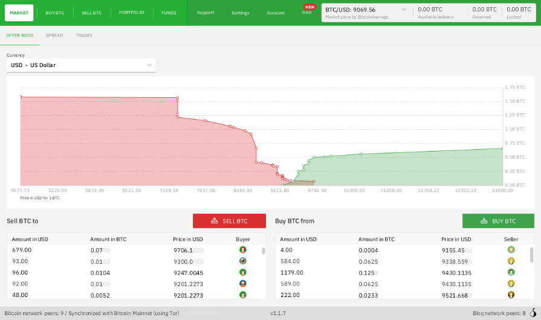

We believe security software like Whonix needs to remain Open Source and independent. Would you help sustain and grow the project? Learn more about our 14 year success story and maybe DONATE!
MoneyDocumentationBitcoinPrevious
page: MoneyIndex page:
DocumentationNext page:
Bitcoin
Bisq: The P2P Exchange Network
Bisq Logo
How to use Bisq - The P2P Exchange Network - in Whonix
Introduction
Bisq is an open-source, peer-to-peer (P2P) application that went into production on 19 April, 2016. Bisq is designed to allow for a safe, private and decentralized method of exchanging national currencies for cryptocurrencies. Primary features include: [1] [2] [3]
- no registration is required - identity theft is impossible
- fully decentralized and censorship resistant design:
- multi-signature escrow transactions without a third party
- security deposits encourage safe, successful trades [4]
- resolution of disputes with a decentralized arbitration system
- protection of user privacy via a custom P2P network of users running Bisq over Tor
- no data is stored regarding who trades with whom -- end-to-end data encryption ensures trade details are only readable by counterparties
- no approval wait times
- resistant against spam or flooding
- a cross-platform desktop application is available for Linux, macOS and Windows
- the project is funded directly by its users through trading fees and donations
Bisq holds a lot of promise, since it eliminates the risk associated with theft of funds from centralized exchanges, removes the threat of interference with trades from third parties, and separates users' personal information from associated transactions. To learn more, refer to:
- the original Bisq whitepaper; and/or
- Phase Zero: A plan for bootstrapping the Bisq DAO for a comprehensive overview of the application.
Support Status
 COMMUNITY SUPPORT ONLY : THIS WHOLE WIKI
PAGE is only supported by the community. Whonix
developers are very unlikely to provide free support
for this content. See Community Support for further information,
including implications and possible alternatives.
COMMUNITY SUPPORT ONLY : THIS WHOLE WIKI
PAGE is only supported by the community. Whonix
developers are very unlikely to provide free support
for this content. See Community Support for further information,
including implications and possible alternatives.
Installation
 This application requires incoming connections through a Tor onion service. Supported Whonix-Gateway™
modifications are therefore necessary for full functionality; see the
instructions below.
This application requires incoming connections through a Tor onion service. Supported Whonix-Gateway™
modifications are therefore necessary for full functionality; see the
instructions below.
For better security, consider using Multiple Whonix-Gateway and Multiple Whonix-Workstation™. In any case, Whonix is the safest choice for running it. [6]
Whonix-Gateway™ Installation Steps
onion-grater Profile
On Whonix-Gateway.
1.
 Update required. [7]
Update required. [7]
2. Extend the onion-grater whitelist.
Whonix-Workstation™ Installation Steps
System Requirements
Bisq is an application that is very resource intensive. Your system needs to accommodate the program requirements by changing the VM configuration.
Platform specific.
- VirtualBox / KVM:
 Increase Virtual Machine RAM to 6GB.
Increase Virtual Machine RAM to 6GB.
- Qubes-Whonix: Assuming
that your Whonix-Workstation™ is named
anon-bisq. In dom0, run:- qvm-prefs anon-bisq memory 600
- Memory:
6GB: qvm-prefs anon-bisq maxmem 6000 - Virtual CPU:
4. qvm-prefs anon-bisq vcpus 4 - Storage:
5GB. qvm-volume extend anon-bisq:private 5Gi
Firewall Settings
Modify the Whonix-Workstation (anon-whonix) user
firewall settings and reload them.
Modify Whonix-Workstation User Firewall Settings
Note: If no changes have yet been made to Whonix
Firewall Settings, then the Whonix User Firewall Settings File
/etc/whonix_firewall.d/50_user.conf appears empty (because
it does not exist). This is expected.
Ensure the VM has sudo access first. If
PERSISTENT Mode | SYSMAINT Session is available in some
form, you must boot into this mode before these steps will work.
Platform specific. Select your platform.
Graphical Whonix-Workstation USER Session
Start Menu → System Tools →
User Firewall SettingsGraphical Whonix-Workstation SYSMAINT Session
System Maintenance Panel → Open Terminal →
run /usr/libexec/whonix-firewall/firewall50userQubes App Launcher (blue/grey "Q") →
Whonix-Workstation App Qube (commonly called anon-whonix)
→ QTerminal → run
sudoedit /usr/local/etc/whonix_firewall.d/50_user.confTerminal Whonix-Workstation
Open file /usr/local/etc/whonix_firewall.d/50_user.conf
with root rights.
sudoedit /usr/local/etc/whonix_firewall.d/50_user.conf
For more help, press on Learn More on the right.
Note: This is for informational purposes only! Do
not edit
/etc/whonix_firewall.d/30_whonix_workstation_default.conf.
The Whonix Global Firewall Settings File
/etc/whonix_firewall.d/30_whonix_workstation_default.conf
contains default settings and explanatory comments about their purpose.
By default, the file is opened read-only and is not meant to be directly
edited. Below, it is recommended to open the file without root rights.
The file contains an explanatory comment on how to change firewall
settings.
## Please use "/etc/whonix_firewall.d/50_user.conf" for your custom configuration,
## which will override the defaults found here. When Whonix is updated, this
## file may be overwritten.Also see: Whonix modular flexible .d style configuration folders.
To view the file, follow these instructions.
If using Qubes-Whonix, complete these steps.
Qubes App Launcher (blue/grey "Q") →
Template → whonix-workstation-18 →
QTerminal → run
nano /etc/whonix_firewall.d/30_whonix_workstation_default.conf
If using a graphical Whonix-Workstation, complete these steps.
Start Menu → System Tools →
Global Firewall Settings
If using a terminal Whonix-Workstation, complete these steps.
In Whonix-Workstation, view the global firewall configuration file in an editor. nano /etc/whonix_firewall.d/30_whonix_workstation_default.conf
Add. TODO: EXTERNAL_OPEN_ALL=true is non-ideal.
EXTERNAL_OPEN_ALL=true
Save.
Reload Whonix-Workstation Firewall.
Ensure the VM has sudo access first. If
PERSISTENT Mode | SYSMAINT Session is available in some
form, and you are not booted into it, reboot the VM to reload the
firewall.
Platform-specific. Select your platform.
Graphical Whonix-Workstation USER Session
Start Menu → System Tools →
Reload FirewallGraphical Whonix-Workstation SYSMAINT Session
System Maintenance Panel → Open Terminal →
run sudo whonix_firewallTerminal Whonix-Workstation
sudo
whonix_firewall
Qubes App Launcher (blue/grey "Q") →
Whonix-Workstation App Qube (commonly named anon-whonix) →
QTerminal → run sudo whonix_firewallGet the Signing Key
On Whonix-Workstation.
Note: The user should take special notice that the Bisq signing key changed on 2023 09 02 without any explanation easily found by the author of this wiki page. [8]
Version 2.1.2 does not use the signing key of Alejandro García (key ID: E222AA02) that is listed with these downloads on github. However the explanation and signing key are linked from the installation and verification instructions to the wiki at https://bisq.wiki/Bisq_2#Installation
- Digital signatures are a tool enhancing download security. They are commonly used across the internet and nothing special to worry about.
- Optional, not required: Digital signatures are optional and not mandatory for using Whonix, but an extra security measure for advanced users. If you've never used them before, it might be overwhelming to look into them at this stage. Just ignore them for now.
- Learn more: Curious? If you are interested in becoming more familiar with advanced computer security concepts, you can learn more about digital signatures here: Verifying Software Signatures
Securely download the signing key.
scurl-download https://github.com/bisq-network/bisq2/releases/download/v2.1.7/E222AA02.asc
Display the key's fingerprint.
gpg --keyid-format long --import --import-options show-only --with-fingerprint E222AA02.asc
Verify the fingerprint. It should show.
Note: Key fingerprints provided on the Whonix website are for convenience only. The Whonix project does not have the authorization or the resources to function as a certificate authority, and therefore cannot verify the identity or authenticity of key fingerprints. The ultimate responsibility for verifying the authenticity of the key fingerprint and correctness of the verification instructions rests with the user.
Key fingerprint = B493 3191 06CC 3D1F 252E 19CB F806 F422 E222 AA02
The most important check is confirming the key fingerprint exactly matches the output above. [9]
 Warning:
Warning:
Do not continue if the fingerprint does not match! This risks using infected or erroneous files! The whole point of verification is to confirm file integrity.
Add the signing key.
gpg --import E222AA02.asc
Bisq1 versus Bisq2
- Bisq1 is considered a different application than Bisq2.
- That means, Bisq2 is not a replacement for Bisq1.
- Bisq1 is not considered outdated.
Forum discussion: https://forum.qubes-os.org/t/is-there-a-tutorial-on-how-to-use-bisq1-on-whonix/34116
Bisq Version Number Choice
1. Check the latest version number and read the release notes:
- Bisq1: https://github.com/bisq-network/bisq/releases
- Bisq2: https://github.com/bisq-network/bisq2/releases
2. The instructions on this wiki page have might not be up-to-date.
Download
On Whonix-Workstation.
Download Bisq.
- Bisq1:
- Download Bisq. scurl-download https://github.com/bisq-network/bisq/releases/download/v1.9.21/Bisq-64bit-1.9.21.deb
- Download OpenPGP signature. scurl-download https://github.com/bisq-network/bisq/releases/download/v1.9.21/Bisq-64bit-1.9.21.deb.asc
- Bisq2:
- Download Bisq. scurl-download https://github.com/bisq-network/bisq2/releases/download/v2.1.7/Bisq-2.1.7.deb
- Download OpenPGP signature. scurl-download https://github.com/bisq-network/bisq2/releases/download/v2.1.7/Bisq-2.1.7.deb.asc
Verification
On Whonix-Workstation.
Verify OpenPGP signature.
gpg --verify Bisq*.asc
If the file is verified successfully, the output will include
Good signature, which is the most important thing to
check.
gpg: WARNING: This key is not certified with a trusted signature!
gpg: There is no indication that the signature belongs to the owner.This message does not alter the validity of the signature related to the downloaded key. Rather, this warning refers to the level of trust placed in the Whonix signing key and the web of trust. To remove this warning, the Whonix signing key must be personally signed with your own key.
Tor over Tor Prevention
On Whonix-Workstation.
Follow these steps to avoid a Tor over Tor scenario.
- Bisq1:
- Create folder the Bisq tor folder. mkdir -p /home/user/.local/share/Bisq/btc_mainnet/tor/
- Create a dummy tor binary. sudo touch /home/user/.local/share/Bisq/btc_mainnet/tor/tor
- Add the executable bit to the dummy tor binary. sudo chmod +x /home/user/.local/share/Bisq/btc_mainnet/tor/tor
- Why is this needed? See footnote for reasons why. [10]
- Bisq2: No special notice.
xdg-desktop-menu Bug Workaround
On Whonix-Workstation.
- Bisq1:
- Use the following workaround to avoid a known bug in xdg which fails
to find a writable system menu directory. [11]
- sudo mkdir -p /usr/share/desktop-directories
- Use the following workaround to avoid a known bug in xdg which fails
to find a writable system menu directory. [11]
- Bisq2: No special notice.
Install
Platform Specific Steps
- Non-Qubes-Whonix: No special steps required. Go to next chapter.
- Qubes-Whonix: See below.
On Whonix-Workstation anon-bisq App Qube.
You need to extend the bind-dirs configuration inside the VM.
- Bisq1:
- sudo mkdir -p /rw/bind-dirs/opt/bisq
- Bisq2:
- sudo mkdir -p /rw/bind-dirs/opt/bisq2
- sudo mkdir -p /rw/config/qubes-bind-dirs.d
Bisq 1 and Bisq 2: Then create the configuration file:
sudo nano /rw/config/qubes-bind-dirs.d/50_user.conf
Paste.
## Bisq 1: binds+=( '/opt/bisq' )
- Bisq 2:
binds+=( '/opt/bisq2' )
- Bisq 1:
binds+=( '/usr/share/desktop-directories' )
Save and exit.
Restart the App Qube to apply the bind-dirs settings.
Installation Command
On Whonix-Workstation.
Install Bisq.
sudo dpkg -i Bisq*.deb
Usage
On Whonix-Workstation.
Start Bisq.
- Bisq1: /opt/bisq/bin/Bisq --torControlPort=9051 --torControlPassword=notrequired --socks5ProxyBtcAddress=127.0.0.1:9050 --useTorForBtc=true
- Bisq2: /opt/bisq2/bin/Bisq2
Figure: Bisq Launch in Whonix

Figure: Bisq Client [12]

After version 1.9.8, the use of DAO became mandatory for everyone and
the line --daoActivated=false now gives an error.
If the fonts are too small, you could alternatively use the following command. [13]
- Bisq1: GDK_SCALE=2 /opt/bisq/bin/Bisq --torControlPort=9051 --torControlPassword=notrequired --socks5ProxyBtcAddress=127.0.0.1:9050 --useTorForBtc=true --daoActivated=false
- Bisq2: GDK_SCALE=2 /opt/bisq2/bin/Bisq2
Refer to the official Bisq documentation to learn about trading essentials, including:
- an introduction to Bisq
- quick start guide to trading in minutes
- wallet information and security
- backup and recovery
- how to stay private
- trading rules and dispute resolution
- fees and security deposits
- payments methods
Forum Discussion
Bisq - The P2P Exchange Network
Donations
After installing Bisq, please consider making a donation to Whonix to keep it running for years to come.
 Donate Bitcoin (BTC) to Whonix.
Donate Bitcoin (BTC) to Whonix.
1HeXtk2iEXSeLr7WhVeCmWgHDw3oE2PKTY

Footnotes
- ↑ https://github.com/bisq-network/bisq
- ↑ https://bisq.network/
- ↑ https://docs.bisq.network/exchange/whitepaper.html#introduction
- ↑ A current limit of at most 1 Bitcoin per transaction applies.
- ↑ * At time of writing, Bisq 2 was still in beta. * Fix startup issues of Tor * Cannot run on Whonix 17 * Add Whonix 17 Support * Fix Bisq 2 onion-grater profile * Version 2.0.4 notes introduce support for Whonix. No additional information available. All communications happen in public.
- ↑ Security considerations: * By using Whonix, additional protections are in place for enhanced security. * This application requires access to Tor's control protocol. * In the Whonix context, Tor's control protocol has dangerous features. The Tor control command GETINFO address reveals the real, external IP of the Tor client. * Whonix provides onion-grater, a Tor Control Port Filter Proxy - filtering dangerous Tor Control Port commands. * When this application is run inside Whonix-Gateway with an onion-grater whitelist extension, it limits Whonix-Workstation application rights to Tor control protocol access only. Non-whitelisted Tor control commands such as GETINFO address are rejected by onion-grater in these circumstances. In this event, Whonix-Workstation cannot determine its own IP address via requests to the Tor Controller, as onion-grater filters the reply. * In comparison with other operating systems: ** If the application is run on a non-Tor-focused operating system like Debian: The application will have unlimited access to Tor's control protocol (a less secure configuration). ** Whonix: The application's access to Tor's control protocol is limited. Only whitelisted Tor control protocol commands required by the application are allowed. * Comparison of using Tor as a client versus hosting Tor onion services. ** Using Tor only as a client: More secure. ** When hosting Tor onion services: Users are more vulnerable to attacks against the Tor network. This is elaborated in chapter Onion Services Security. In conclusion, Whonix is the safest and correct choice for running this application.
- ↑ To acquire the updated onion-grater profile: Fix Bisq 2 onion-grater profile
- ↑ bisq key change 2023 09 02 archive: * https://forums.whonix.org/t/bisq-the-p2p-exchange-network/4953/78 * https://web.archive.org/web/20230902184346/https://bisq.network/downloads/ * https://web.archive.org/web/20230902184346/https://bisq.network/downloads/v2.0.1/E222AA02.asc * E222AA02.asc github redirect link
- ↑ Minor changes in the output such as new uids (email addresses) or newer expiration dates are inconsequential.
- ↑ * Users: Ignore this footnote. * Developers:
For an explanation, which might be interesting for developers only, see
below. This is optional. Defense-in-depth only. Bisq installs its own
version of Tor. From Bisq 2 log.
16:06:19.474 INFO [NetworkService.network-IO-pool-0] b.t.i.TorInstaller: Tor files installed to /home/user/.local/share/Bisq2/torWhy sudo? To avoid
/home/user/.local/share/Bisq2/tor/torgetting overwritten by Bisq. - ↑ https://github.com/bisq-network/bisq/issues/848
- ↑ https://docs.bisq.network/getting-started.html
- ↑ It is the same as above but prepended with
GDK_SCALE=2. https://github.com/bisq-network/bisq/issues/1425
Categories: Documentation